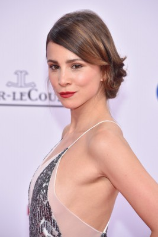
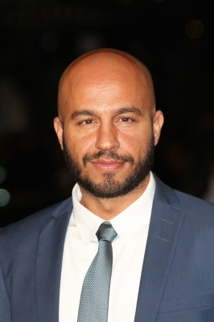
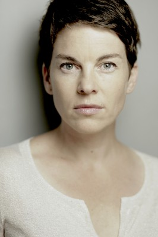
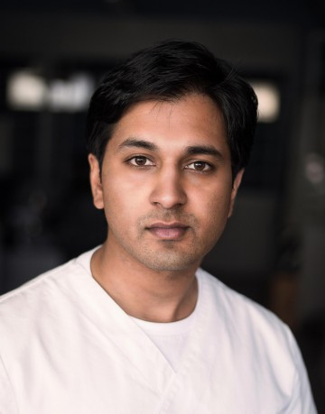

#8252 Macho Man

 IMDB-Wertung: 4.9 / 10
IMDB-Wertung: 4.9 / 10  Metascore: 0
Metascore: 0 
Was braucht es wirklich, um ein richtiger Mann zu sein? Diese Frage weiß Daniel Hagenberger zwar zu beantworten, gerecht wird er dem verbreiteten Ideal aber nicht. Er kann weder mit gestählten Muskeln, noch mit einem selbstbewussten Auftreten beim anderen Geschlecht punkten. Als Frauenversteher, in dessen Erziehung sich die Ideale der 68er wiederspiegeln, ist der 30-Jährige meilenweit vom Macho-Status entfernt. Das wird ihm besonders dann zum Verhängnis, als er das erste Mal die Familie seiner Angebeteten Aylin Denizoglu trifft – und bei dieser Begegnung mit seiner verständnisvollen Art überhaupt nicht punkten kann. Aylins Bruder Cem und ihre Eltern wollen etwas ganz anderes, einen rücksichtlosen Zupacker nämlich. Die Lösung des Problems liegt in Anpassung, denkt Daniel und entschließt sich, bei Cem Nachhilfe in türkischer Männerkultur zu nehmen…
Jahr: 2015
Dauer: 98 Minuten
FSK: 6
Land: Deutschland Studio: UFATonspuren:
Untertitel:
Auflösung: 1080p (1920x808) Größe: 7116 MB
Genre: Komödie, Liebe
Regisseur: Christof Wahl
Drehbuch: Moritz Netenjakob
Soundtrack: Ingo Frenzel, Andrej Melita
Darsteller:
-  Aylin Tezel als Aylin
-  Dar Salim als Cem
 Peter Prager als Rigobert Hagenberger
Peter Prager als Rigobert Hagenberger Vladimir Burlakov als Karl
Vladimir Burlakov als Karl Samuel Finzi als Kleinmüller
Samuel Finzi als Kleinmüller- Tim Sander als Uwe Schäfer
 Nora Tschirner als Tätowiererin
Nora Tschirner als Tätowiererin-  Victoria Mayer als Sandra
- Lukas Podolski als Fußballer
- Caroline Rapp als Schwangere
- Collien Ulmen-Fernandes als Frau in Club
 Sahin Eryilmaz als Türke Triangel Club
Sahin Eryilmaz als Türke Triangel Club- Jennifer Buschmann als Weibliches Model
-  Johny Mathew als Office Friend
 Christian Ulmen als Daniel
Christian Ulmen als Daniel- Axel Stein als Ulli
 Gitta Schweighöfer als Erika Hagenberger
Gitta Schweighöfer als Erika Hagenberger- Vedat Erincin als Baba Denizoglu
- Lilay Huser als Anne Denizoglu
- Mehmet Bozdogan als Tunc
- Inez Bjørg David als Lisa
- Marylu-Saskia Poolman als Marion
- Yeliz Simsek als Emine
- Theresa Underberg als Gaby Haas
- Alexandra Schalaudek als Oma Hagenberger
- Steve Ellery als Englischer Vater
- Timo Dierkes als Pfaff
- Hülya Duyar als Tante Emine
- Nisan Arikan als Hatice
- Irfan Kars als Verkäufer Klamottenladen
- Vassily Kazakos als Griechischer Nachbar
- Hans Nieswandt als DJ
- Lena Ehlers als Bardame
- Cem Sultan Ungan als Skipper Ertan
- Regina Halmich als Trainerin Club Antalya
- Serkan Cetinkaya als Kellner Strandrestaurant
- Thorsten Gohr als Männliches Model
- Jiny Garuli als Bauchtänzerin
- Ioannis Papadopoulos als Cems Freund
- Thorsten Budde als Thorsten
- Mark Keller als
Datei: X:\2015(G-M)\Macho Man (2015, FSK6, 1920x808).mkv seit 13.02.2018
Festplatte: HD 2015(A-Z)
 Es gibt insgesamt 129 Filme in der Gruppe '2015(G-M)'
Es gibt insgesamt 129 Filme in der Gruppe '2015(G-M)'